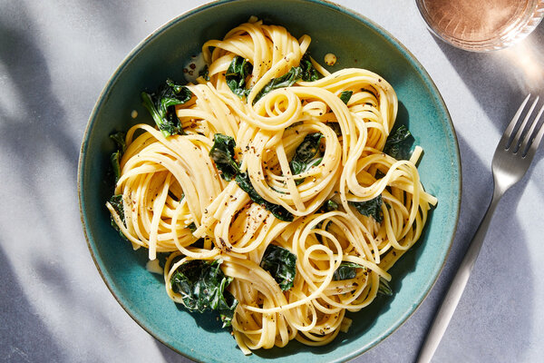

Pasta

Description
I'm literally going to straight up rip this
recipe from the nytimes eats article
This cozy pasta is the perfect place to use up any hard-stem herbs like sage, thyme or rosemary that are languishing in your fridge.
Add the herbs and a cinnamon stick to a pot of heavy cream.
As they bubble together, the cream takes on a surprising but subtle herbaceousness.
Use it to sauce pasta noodles and winter greens.
If you don’t have the herbs listed, leave them out or swap in marjoram or bay leaves, or even dried chile, lemon peel, garlic, shallot or leeks.
The method of infusing cream with flavorings, then using it to sauce pasta, is open to adaptation.
Ingredients
- Kosher salt
- 1 ½ cups heavy cream
- 3 sage leaves
- 3 sprigs thyme or oregano
- 1 small rosemary sprig
- 1 cinnamon stick (or a grating of nutmeg)
- Black pepper
- 1 pound linguine, fettuccine or another long noodle
- 1 bunch dark leafy greens, such as kale, mustard greens, broccoli rabe or mature spinach, stems removed and cut or torn into 2- to 3-inch pieces
Steps
-
Bring a large pot of salted water to a boil. In a small saucepan, combine the heavy cream, sage, thyme, rosemary, cinnamon and a pinch of salt and pepper. Bring to a simmer over medium and cook until the cream has thickened slightly and is reduced to about 1 cup, 12 to 15 minutes, adjusting the heat as needed to maintain a gentle simmer. Remove from heat until the pasta’s ready.
-
When the cream is at the halfway point, add the pasta to the boiling water and cook until a minute or 2 shy of al dente. About 3 minutes before draining the pasta, add the greens to the water. Reserve 1/2 cup pasta water, then drain the pasta and greens with a colander and return to the pot.
-
Place the just-used colander over the pot of pasta, then strain the infused cream through the colander into the noodles. (Discard or compost the herbs and cinnamon stick.) Add the 1/2 cup pasta water to the pasta, set over medium-high heat, and cook, tossing, until the sauce glosses the noodles, 3 to 4 minutes. Season to taste with salt and pepper.